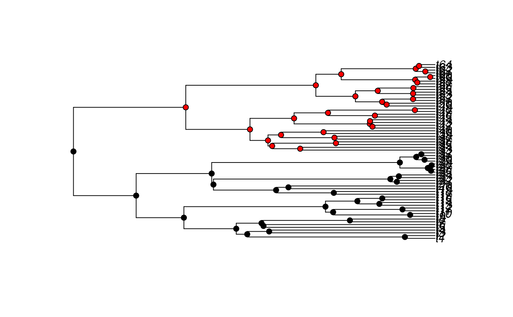

OUwie.RdFits generalized Ornstein-Uhlenbeck-based Hansen models of continuous characters evolving under discrete selective regimes.
OUwie(phy, data, model=c("BM1","BMS","OU1","OUM","OUMV","OUMA","OUMVA",
"TrendyM","TrendyMS"), simmap.tree=FALSE, root.age=NULL,scaleHeight=FALSE,
root.station=FALSE, get.root.theta=FALSE, shift.point=0.5, clade=NULL, tip.fog="none",
starting.vals=NULL, check.identify=TRUE, algorithm=c("invert", "three.point"),
diagn=FALSE, quiet=FALSE, warn=TRUE, lb = NULL, ub = NULL, opts = list(algorithm =
"NLOPT_LN_SBPLX", maxeval = "1000", ftol_rel = .Machine$double.eps^0.5))a phylogenetic tree, in ape “phylo” format and with internal nodes labeled denoting the ancestral selective regimes.
a data.frame containing species information (see Details).
models to fit to comparative data (see Details).
a logical indicating whether the input tree is in SIMMAP format. The default is FALSE.
indicates the age of the tree. This is to be used in cases where the "tips" are not contemporary, such as in cases for fossil trees. Default is NULL meaning latest tip is modern day.
a logical indicating whether the total tree height should be scaled to 1 (see Details). The default is FALSE.
a logical indicating whether to assume a random starting point (TRUE) or a fixed starting point (FALSE) (see Details).
a logical indicating whether the starting state, \(\theta_0\), should be estimated (see Details).
the point along a branch where a regime change is assumed to have occurred (if SIMMAP=FALSE. The default is set to 0.5, or halfway along a branch.
a list containing a pair of taxa whose MRCA is the clade of interest (see Details).
designates whether a fourth column in the data matrix contains within species variation for each species value ("known"). The tip fog is assumed to be the standard error of the species mean. The default is "none", but can be estimated by setting the option to "estimate".
a vector of initial values for the optimization search. For OU models, two must be supplied, with the first being the initial alpha value and the second being the initial sigma squared. For BM models, just a single value is needed.
a logical indicating whether to check that the user-supplied regime paintings will produce identifiable theta estimates. The default is TRUE.
designates whether the standard matrix inversion ('invert') or the faster 'three-point' algorithm of Ho and Ane (2013) should be used.
a logical indicating whether the full diagnostic analysis should be carried out. The default is FALSE.
a logical indicating whether progress should be written to the screen. The default is FALSE.
a logical indicating whether a warning should be printed if the number of parameters exceeds ntips/10. The default is TRUE.
if algorithm == "invert" a single value indicating the lower bound for the parameter values. if algorithm == "three.point", a vector of length 3 with position 1 as alpha lower bound, position 2 as sigma.sq's lower bound, position 3 as theta's lower bound. when set to NULL it will be a default value of 1e-9. Note that even if the model you're using doesn't include alpha (e.g. BM1), it must be included in this vector, but it will not be used to set any bounds.
if algorithm == "invert" a single value indicating the upper bound for the parameter values. if algorithm == "three.point", a vector of length 3 with position 1 as alpha upper bound, position 2 as sigma.sq's upper bound, position 3 as theta's upper bound. when set to NULL it will be a default value of 100. Note that even if the model you're using doesn't include alpha (e.g. BM1), it must be included in this vector, but it will not be used to set any bounds.
a list of options to pass to nloptr for the optimization: useful to adjust for faster, coarser searches
This function fits various likelihood models for continuous characters evolving under discrete selective regimes. The function returns parameter estimates and their approximate standard errors. The R package nloptr provides a common interface to NLopt, an open-source library for nonlinear optimization. The likelihood function is maximized using the bounded subplex optimization routine (NLOPT_LN_SBPLX). As input all OUwie requires is a tree and a trait data.frame. The tree must be of class “phylo” and must contain the ancestral selective regimes as internal node labels. Internal node labels can be applied manually or from some sort of ancestral state reconstruction procedure (BayesTraits, ape, diversitree, SIMMAP, etc.), which would then be brought into OUwie. This is essentially what is required by ouch and Brownie (though Brownie provides built-in ancestral state reconstruction capabilities). The trait data.frame must have column entries in the following order: [,1] species names, [,2] current selective regime, and [,3] the continuous trait of interest. Alternatively, if the user wants to incorporate tip.fog (tip.fog="known"), then a fourth column, [,4] must be included that provides the standard error estimates for each species mean. However, a global tip.fog for all taxa can be estimated from the data (tip.fog="estimate"). Also, a user can specify a particular clade as being in a different selective regime, by specifying a pair of species whose mrca is the root of the clade of interest [e.g., clade=c("taxaA","taxaB")]. OUwie will automatically assign internal node labels and update the data matrix according to this clade designation.
Possible models are as follows: single-rate Brownian motion (model=BM1), Brownian motion with different rate parameters for each state on a tree (model=BMS), Ornstein-Uhlenbeck model with a single optimum for all species (model=OU1), Ornstein-Uhlenbeck model with different state means and a single \(\alpha\) and \(\sigma^2\) acting all selective regimes (model=OUM), and new Ornstein-Uhlenbeck models that assume different state means as well as either multiple \(\sigma^2\) (model=OUMV), multiple \(\alpha\) (model=OUMA), or multiple \(\alpha\) and \(\sigma^2\) per selective regime (model=OUMVA).
Note (Sept. 4): From feedback from a user, we have concerns about the likelihood function for the OUMA and OUMVA models. As of Sept. 4, 2025, we recommend not using these models for now, but we expect the situation to be resolved soon (either with corrected likelihood functions or a definite proof that they are ok as is). That said, we leave these as options for reproducibility and debugging. If you do use them, be sure to note the package version and report this in your work.
By default, we drop the root optima and absorb the weight into whatever regime the root is in. In previous version we used to incorrectly refer to this as "stationarity". True stationarity assumes that the starting state comes from a distribution, and the covariance requires an additional variance term to account for the fact that, up until T=0, the lineage is assumed to have been evolving in the ancestral regime. We have added this in for the OU1 and OUM models only (root.station=TRUE).
Note, too, that when specifying the BMS model also be mindful of the root.station flag. When root.station=FALSE, the non-censored model of O'Meara et al. 2006 is invoked (i.e., a single regime at the root is estimated), and when root.station==TRUE the group mean model of Thomas et al. 2006 (i.e., the number of means equals the number of regimes). The latter case appears to be a strange special case of OU, in that it behaves similarly to the OUMV model, but without selection. I would say that this is more consistent with the censored test of O'Meara et al. (2006), as opposed to having any real connection to OU. In any case, more work is clearly needed to understand the behavior of the group means model, and therefore, I recommend setting root.station=FALSE in the BMS case.
The Hessian matrix is used as a means to estimate the approximate standard errors of the model parameters and to assess whether they are the maximum likelihood estimates. The variance-covariance matrix of the estimated values of \(\alpha\) and \(\sigma^2\) are computed as the inverse of the Hessian matrix and the standard errors are the square roots of the diagonals of this matrix. The Hessian is a matrix of second-order derivatives and is approximated in the R package numDeriv. So, if changes in the value of a parameter results in sharp changes in the slope around the maximum of the log-likelihood function, the second-order derivative will be large, the standard error will be small, and the parameter estimate is considered stable. On the other hand, if the second-order derivative is nearly zero, then the change in the slope around the maximum is also nearly zero, indicating that the parameter value can be moved in any direction without greatly affecting the log-likelihood. In such situations, the standard error of the parameter will be large.
For models that allow \(\alpha\) and \(\sigma^2\) to vary (i.e., OUMV, OUMA, and OUMVA), the complexity of the model can often times be greater than the information that is contained within the data. As a result one or many parameters are poorly estimated, which can cause the function to return a log-likelihood that is suboptimal. This has great potential for poor model choice and incorrect biological interpretations. An eigendecomposition of the Hessian can provide an indication of whether the search returned the maximum likelihood estimates. If all the eigenvalues of the Hessian are positive, then the Hessian is positive definite, and all parameter estimates are considered reliable. However, if there are both positive and negative eigenvalues, then the objective function is at a saddlepoint and one or several parameters cannot be estimated adequately. One solution is to just fit a simpler model. Another is to actually identify the offending parameters. This can be done through the examination of the eigenvectors. The row order corresponds to the entries in index.matrix, the columns correspond to the order of values in eigval, and the larger the value of the row entry the greater the association between the corresponding parameter and the eigenvalue. Thus, the largest values in the columns associated with negative eigenvalues are the parameters that are causing the objective function to be at a saddlepoint.
OUwie returns an object of class OUwie. This is a list with elements:
the maximum log-likelihood.
Akaike information criterion.
Akaike information criterion corrected for sample-size.
Bayesian information criterion.
modified Bayesian information criterion of Ho and Ane (2014).
The model being fit.
The number of parameters counted in the model.
a matrix containing the maximum likelihood estimates of \(\alpha\) and \(\sigma^2\).
a matrix containing the maximum likelihood estimates of \(\theta\) and its standard error.
a matrix containing the approximate standard errors of \(\alpha\) and \(\sigma^2\). The standard error is calculated as the diagonal of the inverse of the Hessian matrix.
indicates value of the measurement error if it was estimated from the data.
A vector of names for the different regimes
The indices of the parameters being estimated are returned. The numbers correspond to the row in the eigvect and can useful for identifying the parameters that are causing the objective function to be at a saddlepoint (see Details).
A logical indicating whether the input phylogeny is a SIMMAP formatted tree.
The user-supplied age at the root of the tree.
The user-supplied point at which regime changes are assumed to have occurred.
Internal settings of the likelihood search.
User-supplied dataset.
User-supplied tree.
A logical indicating whether the starting state, \(\theta_0\), was estimated.
A vector of user-supplied initial search parameters.
The lower bound set.
The upper bound set.
Number of iterations of the likelihood search that were executed.
Indicates whether the root.theta was included in the model.
A table containing parameter estimates and the weights for time spent in each regime for each tip.
The eigenvalues from the decomposition of the Hessian of the likelihood function. If any eigval<0 then one or more parameters were not optimized during the likelihood search (see Details).
The eigenvectors from the decomposition of the Hessian of the likelihood function is returned (see Details).
The vector of values to use if you want to restart the run from this point (starting.vals for a new run).
The algorithm used to estimate parameters
Beaulieu J.M., Jhwueng D.C., Boettiger C., and O'Meara B.C. 2012. Modeling stabilizing selection: Expanding the Ornstein-Uhlenbeck model of adaptive evolution. Evolution 66:2369-2383.
O'Meara B.C., Ane C., Sanderson P.C., Wainwright P.C. 2006. Testing for different rates of continuous trait evolution using likelihood. Evolution 60:922-933.
Butler M.A., King A.A. 2004. Phylogenetic comparative analysis: A modeling approach for adaptive evolution. American Naturalist 164:683-695.
Ho, L.S.T., and C. Ane. 2014. Intrinsic inference difficulties for trait evolution with Ornstein-Uhlenbeck models. Methods in Ecology and Evolution, 5: 1133-1146.
Thomas G.H., Freckleton R.P., and Szekely T. 2006. Comparative analysis of the influence of developmental mode on phenotypic diversification rates in shorebirds. Proceedings of the Royal Society, B. 273:1619-1624.
# \donttest{
data(tworegime)
#Plot the tree and the internal nodes to highlight the selective regimes:
select.reg<-character(length(tree$node.label))
select.reg[tree$node.label == 1] <- "black"
select.reg[tree$node.label == 2] <- "red"
plot(tree)
nodelabels(pch=21, bg=select.reg)

# }
if (FALSE) { # \dontrun{
#To see the first 5 lines of the data matrix to see what how to
#structure the data:
trait[1:5,]
#Now fit an OU model that allows different sigma^2:
OUwie(tree,trait,model=c("OUMV"))
#Fit an OU model based on a clade of interest:
OUwie(tree,trait,model=c("OUMV"), clade=c("t50", "t64"), algorithm="three.point")
#For large trees, it may be useful to have ways to restart the search (due to
#finite time per run on a computing cluster, for example). You can do this
#by changing settings of OUwie runs. For example:
run1 <- OUwie(tree,trait,model=c("OUMV"), root.station=FALSE, algorithm="invert",
opts = list("algorithm"="NLOPT_LN_SBPLX", "maxeval"="500", "ftol_abs"=0.001))
save(run1, file="run1.rda")
#Then, later or in a different session:
load("run1.rda")
run2 <- OUwie(tree, trait, model=c("OUMV"), algorithm="three.point",
opts = list("algorithm"="NLOPT_LN_SBPLX", "maxeval"="500", "ftol_abs"=0.001),
starting.vals=run1$new.start)
#run2 will start off where run1 stopped.
} # }